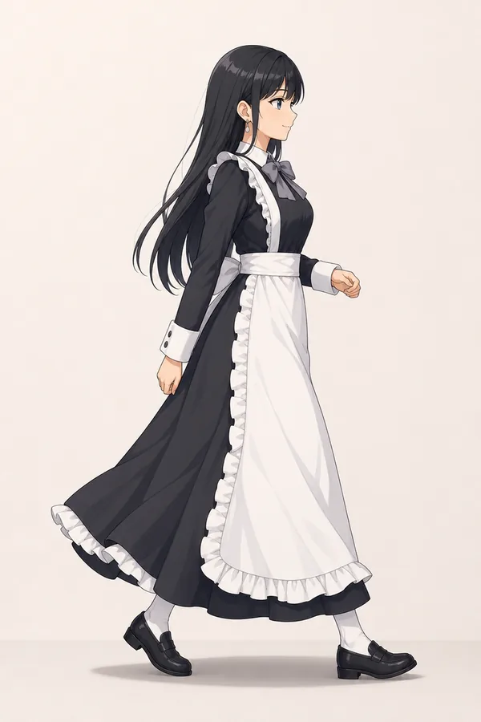
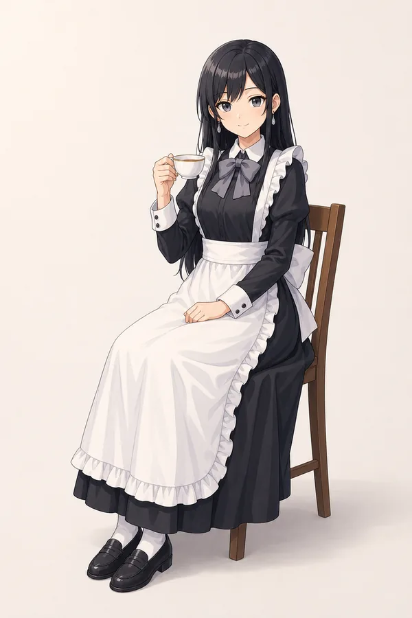

오늘의 과제

박사시아가 복도를 걷는다. 치맛단은 어떻게 움직일까?

주판봇치마는 치마죠! 서 있을 때랑 똑같이 그리면 됩니다!

초파리 연구원걸으면 공기가 치마 안으로 들어가는데? 속도부터 재 보자.

시아…빨리 걸으면 앞치마 프릴이 뒤로 밀려요.
시아가 메이드복을 입고 걷고, 앉고, 팔을 굽히고, 가방을 멥니다. 가만히 서 있을 때와 주름이 어떻게 달라질까요?
그림 실력·코드·수식을 몰라도 됩니다. 실험을 눌러 보며 따라오세요.
걸으면 치마 안으로 공기가 들어가 부풀고, 밑단은 움직임 반대쪽으로 흐릅니다

학교 수학으로 보면 — 제곱 — 같은 수를 두 번 곱합니다. 2² = 4, 3² = 9.
| 식 조각 | 뜻 |
|---|---|
| 속도 | 걷거나 뛰는 빠르기 |
| ∝ | 비례. 정확한 값은 천의 무게·길이에 따라 다름 |
| 들리는 정도 | 밑단이 서 있을 때보다 올라간 높이 |

회전문을 빨리 밀면 바람이 확 불고, 천천히 밀면 거의 느껴지지 않습니다.
치마는 허리에서 꿰맨 곳까지는 몸에 붙고, 그 아래부터 부풉니다. 부푼 곳의 높이를 한 줄로 맞추고, 프릴 주름은 치마가 퍼지는 방향을 따라 넣으면 자연스럽습니다. 부푼 곳 아래에는 그림자가 생깁니다.

속도 1에서 2cm, 2에서 8cm, 3에서 18cm로 들리는 정도가 제곱으로 커집니다.
밑단은 걷는 방향 반대쪽으로 물결이 밀리고, 앞으로 나간 다리 쪽은 천이 다리에 걸려 당겨집니다.
작업에서는 동작의 빠르기를 먼저 정하고, 그에 맞춰 밑단의 들림과 물결 크기를 정합니다. 프릴 선은 치마가 퍼지는 방향으로 넣습니다.

AI 그림에서 시아가 뛰고 있는데 치마가 서 있을 때처럼 곧게 내려와 있습니다. 문제일까요?
뛰는 장면이면 치마가 부풀고 밑단이 뒤로 흘러야 합니다. 'skirt and apron hem lifted and flowing backward with the motion'처럼 동작에 대한 옷의 반응을 적어 줍니다.
한 방향으로 접은 주름치마는 보는 방향에 따라 한쪽 뒷면만 보이고, 그 뒷면에 그림자가 생깁니다
학교 수학으로 보면 — 벡터의 내적과 코사인 — 두 방향이 같은 쪽을 볼수록 값이 큽니다.
| 식 조각 | 뜻 |
|---|---|
| 면의 방향 | 그 면이 바깥으로 향한 방향 |
| 눈 방향 | 면에서 보는 사람을 향한 방향 |
| cos(사이각) | 두 방향이 같은 쪽이면 +, 반대쪽이면 − (수학에서는 '내적'이라고 부릅니다) |
계단을 아래에서 올려다보면 디딤판은 안 보이고 앞판만, 위에서 내려다보면 디딤판만 보입니다.
3D 렌더링에서는 이 계산으로 안 보이는 뒷면을 건너뜁니다(뒷면 제거). 그림에서는 반대로, 보이는 뒷면을 찾아 그곳에 그림자를 넣어 접힘을 강조합니다.

한 방향으로 접은 치마는 보는 방향에 따라 한쪽 절반의 뒷면만 보입니다. 각이 90°를 넘는 뒷면은 가려집니다.
맞주름(양쪽으로 접은 주름)은 양쪽 뒷면이 짝지어 보이므로, 그림자도 짝으로 넣습니다.
작업에서는 치마의 접는 방식을 먼저 정하고, 보이는 뒷면에만 그림자를 넣습니다. 앉으면 다리에 닿지 않고 꺼진 곳에 그림자가 생깁니다.
AI 그림의 주름치마에서 모든 주름의 양쪽 뒷면이 다 보입니다. 괜찮을까요?
한 방향 주름이면 한쪽 뒷면만 보여야 합니다. 양쪽이 다 보이면 접힌 구조가 아니라 무늬처럼 그린 오류입니다. 'side-pleated skirt with all pleats folded in one direction'으로 적습니다.
팔꿈치·무릎을 굽히면 안쪽 천은 남아서 모이고, 바깥쪽 천은 부족해서 당겨집니다
학교 수학으로 보면 — 호의 길이 = 반지름 × 각도(라디안). 두 호의 반지름 차이가 두께입니다.
| 식 조각 | 뜻 |
|---|---|
| 두께 | 팔·다리의 앞뒤 두께 |
| 굽힌 각 | 곧게 편 상태에서 굽힌 각도 |
| 길이 차이 | 안쪽에 남는 천(= 바깥쪽에서 모자란 천) |
무릎을 굽히고 앉으면 바지 무릎 뒤는 접혀 모이고, 무릎 앞은 팽팽해져 무릎 모양이 드러납니다.
애니메이터는 관절이 굽을수록 안쪽 모임 주름의 수를 늘립니다. 무릎에서 당겨진 주름은 무릎(접점)을 향하고, 바짓단은 신발에 눌려 모임 주름이 생깁니다.
두께 8cm, 90°에서 약 12.6cm, 45°에서 약 6.3cm가 안쪽에 남습니다. 굽힐수록, 두꺼울수록 많이 남습니다.
남는 천은 안쪽 모임 주름이 되고, 모자란 바깥쪽은 팽팽하게 당겨져 관절의 둥근 모양이 드러납니다.
작업에서는 굽힌 각을 먼저 정하고, 안쪽 주름 수를 그에 맞춰 늘립니다. 앉기·숙이기도 허리와 무릎에서 같은 규칙입니다.

앉아 있는 캐릭터의 AI 그림에서 바지 무릎 앞뒤에 주름이 없습니다. 맞을까요?
무릎을 굽히면 뒤에는 모임 주름, 앞에는 당김이 생겨야 합니다. 'fabric bunching behind the bent knees and pulled taut over the kneecaps'처럼 적어 줍니다.
소품과 옷차림이 바뀌면 천이 걸리는 곳이 새로 생기고, 주름은 그곳에서 시작합니다
셔츠를 바지 안에 넣으면 허리에 천이 고여 모임 주름이 생기고, 꺼내 입으면 아래로 길게 처집니다.
캐릭터의 소품 설정(가방·넥타이·벨트)은 주름 설정이기도 합니다. 손잡이를 쥔 손이 끈을 누른 곳, 백팩 아랫면이 옷을 밀어 올린 곳에 모임 주름이 생깁니다. 넥타이만 당기면 셔츠는 거의 그대로이고 깃만 따라갑니다.
숄더백은 어깨에, 백팩은 허리 뒤에 접점을 더합니다. 숄더백 끈 아래에서는 주름이 몸통 쪽으로, 백팩 아래에서는 허리에 모임 주름이 생깁니다.
셔츠를 넣으면 허리띠가 접점이 되어 주름이 허리에 고이고, 꺼내면 어깨에서 밑단까지 길게 처집니다. 넥타이를 당기면 깃과 단추 쪽만 끌려갑니다.
작업에서는 소품을 얹은 뒤 '이 소품이 누르거나 당기는 곳'을 접점으로 표시하고 주름을 다시 정리합니다.
AI 그림에서 숄더백 끈이 어깨 위에 떠 있고 옷에는 아무 변화가 없습니다. 고칠 곳일까요?
끈은 어깨를 눌러 접점을 만들어야 합니다. 'the bag strap presses into the shoulder, creating folds radiating from it'처럼 소품과 옷의 관계를 적습니다.
| 항목 | 주판봇 | 초파리 |
|---|---|---|
| 닮음(외형 고정값) | 8 | 8 |
| 움직임(공기·굽힘) | 2 | 8 |
| 자연스러움(접점·접힘) | 4 | 8 |
| 합계 | 14 | 24 |


점수는 이야기 속 예시입니다. 실제 그림을 평가한 값이 아닙니다.
| 주제 | 한 줄 | 작업에서는 |
|---|---|---|
| 걷기 | 들림 ∝ 속도² | 밑단은 뒤로 흐르게 |
| 주름치마 | cos(사이각) > 0인 뒷면만 보인다 | 보이는 뒷면에만 그림자 |
| 굽히기 | 길이 차이 = 두께 × 각 | 안쪽 모임, 바깥 당김 |
| 소품 | 누르고 당기는 곳 = 새 접점 | 소품을 얹고 주름 다시 정리 |

이 페이지에 나온 개념·방법·비유·쓰임을 모았습니다. 검색하고, "설명 보러 가기"로 본문에 돌아갑니다.
지식 색인을 출처와 함께 파일로 내려받습니다. 서지 관리는 BibTeX·RIS, 온톨로지 편집은 Turtle, 그래프 도구는 CSV, 여러 페이지 합치기는 kg.json입니다.